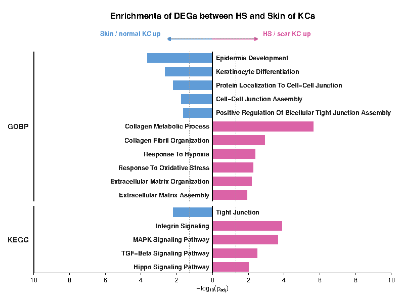

plot23 · 代码 3 · 图 2 · 笔记 1 · 代码库专题
双向富集
代码库整理的专题，README 见原始目录。

Fig1C 0825 单细胞双向条形图 6.7x5cm12.1_双向富集条形图/Fig1C_0825_单细胞双向条形图_6.7x5cm.pdf
共 2 张：点缩略图切换主图，下载按钮跟随当前主图。

图源：Fig1C_0825_单细胞双向条形图_6.7x5cm.pdf
分析代码
3 个源码文件，按目录顺序；本机绝对路径已替换为 ~。 代码可复制，但需要按自己的数据改路径与参数。
12.1_双向富集条形图/01_fig1c_gokegg_bidirectional_原版.r
# Figure 1C: single-cell GO BP + KEGG bidirectional enrichment
# Layout adapted from archive/0603改图/01_GO_KEGG_bidirectional/01_bidirectional.R
#
# 2026-09-28: 移除条末的 Count 圆点标记 (用户要求); 只去这两层, 其余版式不动。
# 改前版本归档 archive/20260928_改前_带Count圆点/。
#
# 2026-09-24: 条目由 18 条减至 16 条 (只改条目, 版式/配色/面板完全不动) —— 用户要求
# 移除 epidermal cell differentiation (GOBP↓, padj=2.73e-04, Count=19) 与
# substrate adhesion-dependent cell spreading (GOBP↑, padj=2.41e-03, Count=18)。
# 两条数据均真实显著, 属呈现取舍。注: keratinocyte differentiation 予以保留
# (用户先前提及移除该条, 后更正为移除 epidermal cell differentiation)。
# 同日: 用户要求风格定为【实色直角矩形、不做渐变】—— 先前试做的逐条渐变/圆角方案
# 已弃用, 脚本存 archive/20260924_圆角渐变_未采用/ 备查。
#
# 2026-09-22: 条目由 22 条减至 18 条 (只改条目, 版式/配色/面板完全不动) —— 用户要求
# 移除 4 条: positive regulation of cell adhesion (GOBP↑),
# response to transforming growth factor beta (GOBP↑),
# intrinsic apoptotic signaling pathway (GOBP↓), PI3K-Akt signaling pathway (KEGG↑)。
# 四条数据均真实显著, 属呈现取舍。改前 22 条版归档 archive/20260922_改前_22条版/。
#
# 2026-09-18: 条目由 16 条扩至 22 条 (只改条目, 版式/配色/面板完全不动),
# 新增 7 条覆盖三条叙事线 —— 机械感知增强 / 细胞连接组装受损 / 表皮屏障受损,
# 另含 3 条 ECM 沉积-重塑条目; 同时移除 Focal adhesion (呈现取舍, 数据本身显著)。
# 新增条目按 padj 自动落位, 不手工指定顺序。
# 全部数值取自同一批 ORA 表, 逐条核对见 README「三模块叙事」一节。
suppressPackageStartupMessages({
library(ggplot2)
library(dplyr)
library(patchwork)
})
# 字体族: 2026-09-15 起 AI 导入乱码修复 ——
# 原 cairo_pdf 版嵌入 Liberation Sans/DejaVu 子集 (CID+Identity-H), Illustrator 无法
# 映射为可编辑文字 (显示乱码; 转曲线版又拆成小图形不能改字)。改用 pdf() 设备
# 不嵌字体, 只引用标准字体名, AI 以本地 Arial/Times New Roman 替换且文字可编辑。
# 命令行第 1 参指定: "Helvetica"(默认, AI 中替换为 Arial) 或 "Times"(新罗马)。
font_args <- commandArgs(trailingOnly = TRUE)
font_family <- if (length(font_args) >= 1 && nzchar(font_args[1])) font_args[1] else "Helvetica"
proj_dir <- "~/hz/20260811_zmxFig单细胞Bulk/01_单细胞GSE156326"
enrich_dir <- file.path(proj_dir, "archive", "20260620版本", "Figure1_C", "archive_enrichment", "ora")
outdir <- file.path(proj_dir, "20260811投稿美化", "02_Fig1C_GOKEGG")
dir.create(outdir, recursive = TRUE, showWarnings = FALSE)
p_cutoff <- 0.05
# 2026-09-24 换色系 (用户指定 rgb(216,86,159) / rgb(83,148,212)) ——
# 旧的 HS/scar↑ 红 #DE4230 -> 新粉 #D8569F; 旧的 Skin/normal↑ 蓝 #3792C1 -> 新蓝 #5394D4。
# 只换色值, 版式/条目/排序不动。同步更新共享色板 ../00_共享素材/palette.R。
col_up <- "#D8569F"
col_down <- "#5394D4"
# 原 font_family <- "Liberation Sans" 已弃用 (cairo 子集嵌入导致 AI 乱码), 见文件头说明
go_up_pairs <- c(
# 2026-09-22 移除两条 (用户要求; 数据本身显著, 纯呈现取舍) --------------------
# "positive regulation of cell adhesion" (padj=4.85e-08, Count=71)
# "response to transforming growth factor beta" (padj=4.53e-07, Count=50)
# 注: KEGG 侧另有 "TGF-beta signaling pathway", 属不同条目, 保留。
"Collagen Metabolic Process" = "collagen metabolic process",
"Extracellular Matrix Organization" = "extracellular matrix organization",
"Response To Oxidative Stress" = "response to oxidative stress",
"Response To Hypoxia" = "response to hypoxia",
# 2026-09-18 新增: ECM 沉积/重塑 ----------------------------------------------
# 2026-09-24 移除 "substrate adhesion-dependent cell spreading"
# (GO_BP_UP.csv, padj=2.41e-03, Count=18) —— 用户要求, 仅作呈现取舍。
# 注: 该条原属"机械感知"模块, 移除后该模块仅剩 KEGG 的 Integrin / Hippo 两条。
"Collagen Fibril Organization" = "collagen fibril organization",
"Extracellular Matrix Assembly" = "extracellular matrix assembly"
)
go_down_pairs <- c(
# 2026-09-22 移除 "intrinsic apoptotic signaling pathway"
# (GO_BP_DOWN.csv, padj=1.58e-06, Count=27) —— 用户要求, 仅作呈现取舍。
# 2026-09-24 移除 "epidermal cell differentiation"
# (GO_BP_DOWN.csv, padj=2.73e-04, Count=19) —— 用户要求, 仅作呈现取舍。
# 注: "keratinocyte differentiation" 保留。移除后"表皮屏障"模块为
# Keratinocyte Differentiation + Epidermis Development。
"Keratinocyte Differentiation" = "keratinocyte differentiation",
"Epidermis Development" = "epidermis development",
"Positive Regulation Of Bicellular Tight Junction Assembly" = "positive regulation of bicellular tight junction assembly",
# 2026-09-18 新增: 连接组装模块 + 表皮屏障模块 --------------------------------
# TJ/junction: 细胞连接的组装和稳定程序受损
# 注: 字面条目 "bicellular tight junction assembly" 双向均不显著
# (GO_BP_UP padj=0.278 / GO_BP_DOWN padj=0.247), 故沿用上图所示的
# "positive regulation of bicellular tight junction assembly" (padj=0.023)
"Protein Localization To Cell-Cell Junction" = "protein localization to cell-cell junction",
"Cell-Cell Junction Assembly" = "cell-cell junction assembly"
# Epidermal barrier: 表皮成熟和屏障形成程序受损
# 2026-09-24 移除 "epidermal cell differentiation" (见本列表开头注释)
)
kegg_up_pairs <- c(
"Integrin Signaling" = "Integrin signaling",
"MAPK Signaling Pathway" = "MAPK signaling pathway",
# 2026-09-22 移除 "PI3K-Akt signaling pathway"
# (KEGG_UP.csv, padj=1.32e-03, Count=41) —— 用户要求, 仅作呈现取舍。
"TGF-Beta Signaling Pathway" = "TGF-beta signaling pathway",
# 2026-09-18 新增: 机械感知模块 (YAP/TAZ 机械转导核心通路)
"Hippo Signaling Pathway" = "Hippo signaling pathway"
# 2026-09-18 移除 "Focal Adhesion"(KEGG_UP.csv, padj=2.15e-04) —— 用户要求,
# 该条目与 Bulk 项目图B 的 KEGG 条目重复; 数据本身显著, 仅作呈现取舍。
)
kegg_down_pairs <- c(
"Tight Junction" = "Tight junction"
# 2026-09-15: 移除 "HIF-1 Signaling Pathway"(KEGG_DOWN.csv, padj=0.0152) —— 其指向
# "scar 缺氧下调",与 GO_BP_UP 的 "response to hypoxia"(padj=0.0042) 方向冲突。
# 详见 ../archive/20260915_改前_HIF-1版/README.md 与 ../../06_scar_缺氧/README.md
)
match_named <- function(file_name, pairs, direction, database) {
raw <- read.csv(file.path(enrich_dir, file_name), stringsAsFactors = FALSE)
res <- lapply(seq_along(pairs), function(i) {
shown <- names(pairs)[i]
source_name <- unname(pairs[i])
hit <- raw[tolower(raw$Description) == tolower(source_name), , drop = FALSE]
if (nrow(hit) == 0) return(NULL)
hit <- hit[1, , drop = FALSE]
data.frame(Database = database, Direction = direction, Description = shown,
logP = -log10(as.numeric(hit$p.adjust)), Count = as.numeric(hit$Count),
stringsAsFactors = FALSE)
})
bind_rows(res)
}
go_data <- bind_rows(match_named("GO_BP_UP.csv", go_up_pairs, "UP", "GOBP"),
match_named("GO_BP_DOWN.csv", go_down_pairs, "DOWN", "GOBP"))
kegg_data <- bind_rows(match_named("KEGG_UP.csv", kegg_up_pairs, "UP", "KEGG"),
match_named("KEGG_DOWN.csv", kegg_down_pairs, "DOWN", "KEGG"))
combined <- bind_rows(go_data, kegg_data) %>%
mutate(logP_dir = ifelse(Direction == "DOWN", -logP, logP), Desc_wrap = Description) %>%
group_by(Database) %>% arrange(Database, Direction, desc(logP)) %>%
mutate(Desc_wrap = factor(Desc_wrap, levels = rev(unique(Desc_wrap)))) %>% ungroup()
if (nrow(combined) != 16L) stop("预期 16 条单细胞通路，实际匹配到 ", nrow(combined), " 条。")
if (any(!is.finite(combined$logP_dir))) stop("p.adjust 含无效数值。")
sig_line <- -log10(p_cutoff)
x_limit <- max(10, ceiling(max(abs(combined$logP_dir)) + 0.5))
p_main <- ggplot(combined, aes(x = logP_dir, y = Desc_wrap)) +
geom_col(aes(fill = Direction), width = 0.68, alpha = 0.92) +
# Single divider immediately to the right of the GOBP/KEGG strip labels.
geom_vline(xintercept = -x_limit, linewidth = 0.45, color = "black") +
geom_vline(xintercept = 0, linewidth = 0.35, color = "black") +
geom_vline(xintercept = c(sig_line, -sig_line), linetype = "dashed", color = "grey60", linewidth = 0.2) +
geom_text(aes(x = ifelse(Direction == "UP", -0.18, 0.18), label = Desc_wrap,
hjust = ifelse(Direction == "UP", 1, 0)), family = font_family,
size = 3.15, color = "grey10", lineheight = 0.82, fontface = "bold") +
# 2026-09-28 移除条末的 Count 圆点标记 (白心灰边圆 + 内标基因数) —— 用户要求。
# 原来两层为:
# geom_point(aes(x = logP_dir + ifelse(Direction == "UP", 0.52, -0.52), y = Desc_wrap),
# shape = 21, fill = "white", color = "grey45", stroke = 0.7, size = 3.6)
# geom_text(aes(x = logP_dir + ifelse(Direction == "UP", 0.52, -0.52), label = Count),
# family = font_family, size = 2.35, color = "grey25", vjust = 0.58,
# hjust = 0.5, fontface = "bold")
# 注: 圆点位于 x = logP_dir ± 0.52, 均在 x_limit=10 内, 移除不影响坐标轴范围;
# Count 数据仍保留在绘图数据 rda 中, 需要时可随时恢复。
scale_fill_manual(values = c("UP" = col_up, "DOWN" = col_down), guide = "none") +
scale_x_continuous(limits = c(-x_limit, x_limit), breaks = seq(-x_limit, x_limit, by = 2),
labels = abs, expand = c(0, 0)) +
scale_y_discrete(expand = expansion(add = c(0.45, 0.45))) +
facet_grid(Database ~ ., scales = "free_y", space = "free_y", switch = "y") +
labs(x = expression(-log[10](p[adj])), y = NULL) +
theme_minimal(base_size = 9.5, base_family = font_family) +
theme(strip.placement = "outside",
# Strip border provides a vertical divider immediately to the right of GOBP/KEGG labels.
strip.background = element_rect(fill = "white", color = NA),
strip.text.y.left = element_text(face = "bold", size = 9.5, angle = 0, hjust = 0.5, vjust = 0.5,
margin = margin(r = 5, unit = "pt")),
axis.text.y = element_blank(), axis.ticks.y = element_blank(), axis.line.y = element_blank(),
axis.text.x = element_text(size = 8.5, color = "black"),
axis.title.x = element_text(size = 9, color = "black", margin = margin(t = 2)),
axis.line.x = element_line(color = "black", linewidth = 0.3),
axis.ticks.x = element_line(color = "black", linewidth = 0.25), panel.grid = element_blank(),
panel.border = element_blank(), panel.spacing = unit(7, "pt"),
plot.background = element_rect(fill = "white", color = NA),
plot.margin = margin(t = 2, r = 8, b = 2, l = 5, unit = "pt"))
p_arrows <- ggplot(data.frame(x = 0, y = 0), aes(x, y)) +
annotate("segment", x = 0, xend = -2.5, y = 0, yend = 0,
arrow = arrow(length = unit(4, "pt"), type = "closed"), linewidth = 0.5, color = col_down) +
annotate("segment", x = 0, xend = 2.5, y = 0, yend = 0,
arrow = arrow(length = unit(4, "pt"), type = "closed"), linewidth = 0.5, color = col_up) +
annotate("segment", x = -2.5, xend = 2.5, y = 0, yend = 0,
linewidth = 0.25, linetype = "dotted", color = "grey50") +
annotate("text", x = -2.5, y = 0, label = "Skin / normal KC up", hjust = 1.12,
vjust = -0.62, size = 3.25, fontface = "bold", color = col_down) +
annotate("text", x = 2.5, y = 0, label = "HS / scar KC up", hjust = -0.12,
vjust = -0.62, size = 3.25, fontface = "bold", color = col_up) +
scale_x_continuous(limits = c(-x_limit, x_limit), expand = c(0, 0)) +
scale_y_continuous(limits = c(-0.3, 0.3), expand = c(0, 0)) + theme_void() +
theme(plot.margin = margin(t = 4, b = 4, unit = "pt"))
title_grob <- grid::textGrob("Enrichments of DEGs between HS and Skin of KCs",
gp = grid::gpar(fontface = "bold", fontsize = 12, fontfamily = font_family),
hjust = 0.5)
p_final <- (patchwork::wrap_elements(panel = title_grob) / p_arrows / p_main) +
patchwork::plot_layout(heights = c(1, 1.1, 14))
font_tag <- switch(font_family, Times = "TimesNewRoman", Helvetica = "默认字体", font_family)
# 2026-09-18: 文件名去掉 "_6.7x5cm" 后缀 —— 该后缀名实不符 (pdf() 写出的是 20×15 cm
# 画布; 期刊单栏尺寸由用户在 AI 内缩放, 或按 README 的 gs -dPDFFitPage 命令生成)。
pdf_out <- file.path(outdir, sprintf("Fig1C_0825_单细胞双向条形图_%s.pdf", font_tag))
# 2026-09-15: 改用 pdf() 设备 (不嵌字体, 引用 Helvetica/Times 标准字体名) ——
# 1) ggsave(device=cairo_pdf) 会嵌入字体子集, Illustrator 中乱码 (见文件头说明);
# 2) paper="special" 显式指定, 避免 papersize=a4 环境改变页面尺寸 (旧脚本踩过的坑)。
grDevices::pdf(pdf_out, width = 20 / 2.54, height = 15 / 2.54,
family = font_family, paper = "special", onefile = TRUE, bg = "white")
print(p_final)
dev.off()
save(combined, file = file.path(outdir, "Fig1C_GOBP_KEGG_unified_data.rda"))
cat("输出 PDF: ", pdf_out, "\n通路数: ", nrow(combined), "\n")
12.1_双向富集条形图/02_双向富集条形图_模板.r
# ============================================================
# 02_双向富集条形图_模板.R — GO:BP + KEGG 双向 (bidirectional) 富集条形图
# ============================================================
# 复现 Fig1C（HS/scar vs Skin/normal KC 差异通路，16 条）的投稿级模板。
# 数据来自本目录 Fig1C_GOKEGG_16条绘图数据.csv，**不依赖原项目路径**，克隆即跑。
#
# 版式要点（与原版一致）:
# - 中轴 x=0 为方向分界: UP(HS/scar↑) 向右粉, DOWN(skin/normal↑) 向左蓝
# - 横轴 = 真实 -log10(padj)，负半轴刻度显示绝对值；虚线 = -log10(0.05)
# - 通路名贴中轴内侧 (UP 右对齐 hjust=1 / DOWN 左对齐 hjust=0)，geom_text 精确落位
# ⚠ 不要用 geom_text_repel: 标签逐行锁位，repel 会把标签推离所在行
# - facet_grid(Database ~ .) 分 GOBP / KEGG 两栏，strip 文字竖排加粗作分栏标
# - 顶部 patchwork 拼标题 grob + 双向箭头方向标
# - 输出用 pdf() 设备 (不嵌字体，AI 中可编辑)；如需期刊尺寸版见 README
#
# 用法: Rscript 02_双向富集条形图_模板.R
# 依赖: ggplot2 dplyr patchwork
# ============================================================
suppressPackageStartupMessages({
library(ggplot2)
library(dplyr)
library(patchwork)
})
# 字体: "Helvetica"(默认, AI 中显示 Arial) 或 "Times"(Times New Roman)
font_args <- commandArgs(trailingOnly = TRUE)
font_family <- if (length(font_args) >= 1 && nzchar(font_args[1])) font_args[1] else "Helvetica"
csv_in <- file.path(dirname(sub("^--file=", "", grep("^--file=", commandArgs(), value = TRUE)[1])),
"Fig1C_GOKEGG_16条绘图数据.csv")
if (!file.exists(csv_in)) csv_in <- "Fig1C_GOKEGG_16条绘图数据.csv" # 交互式运行兜底
p_cutoff <- 0.05
col_up <- "#D8569F" # HS/scar KC up
col_down <- "#5394D4" # Skin/normal KC up
combined <- read.csv(csv_in, stringsAsFactors = FALSE)
stopifnot(nrow(combined) == 16L, all(is.finite(combined$logP_dir)))
# 按 面板内 方向、显著性降序 排行，锁死离散 y 轴顺序（上→下 = 显著性降序）
combined <- combined %>%
group_by(Database) %>%
arrange(Database, Direction, desc(logP), .by_group = TRUE) %>%
mutate(Desc_wrap = factor(Description, levels = rev(unique(Description)))) %>%
ungroup()
sig_line <- -log10(p_cutoff)
x_limit <- max(10, ceiling(max(abs(combined$logP_dir)) + 0.5))
p_main <- ggplot(combined, aes(x = logP_dir, y = Desc_wrap)) +
geom_col(aes(fill = Direction), width = 0.68, alpha = 0.92) +
geom_vline(xintercept = -x_limit, linewidth = 0.45, color = "black") + # strip 分隔线
geom_vline(xintercept = 0, linewidth = 0.35, color = "black") + # 方向中轴
geom_vline(xintercept = c(sig_line, -sig_line), linetype = "dashed",
color = "grey60", linewidth = 0.2) + # p=0.05 阈值
geom_text(aes(x = ifelse(Direction == "UP", -0.18, 0.18), label = Desc_wrap,
hjust = ifelse(Direction == "UP", 1, 0)), family = font_family,
size = 3.15, color = "grey10", lineheight = 0.82, fontface = "bold") +
scale_fill_manual(values = c("UP" = col_up, "DOWN" = col_down), guide = "none") +
scale_x_continuous(limits = c(-x_limit, x_limit), breaks = seq(-x_limit, x_limit, by = 2),
labels = abs, expand = c(0, 0)) +
scale_y_discrete(expand = expansion(add = c(0.45, 0.45))) +
facet_grid(Database ~ ., scales = "free_y", space = "free_y", switch = "y") +
labs(x = expression(-log[10](p[adj])), y = NULL) +
theme_minimal(base_size = 9.5, base_family = font_family) +
theme(strip.placement = "outside",
strip.background = element_rect(fill = "white", color = NA),
strip.text.y.left = element_text(face = "bold", size = 9.5, angle = 0,
hjust = 0.5, vjust = 0.5, margin = margin(r = 5, unit = "pt")),
axis.text.y = element_blank(), axis.ticks.y = element_blank(), axis.line.y = element_blank(),
axis.text.x = element_text(size = 8.5, color = "black"),
axis.title.x = element_text(size = 9, color = "black", margin = margin(t = 2)),
axis.line.x = element_line(color = "black", linewidth = 0.3),
axis.ticks.x = element_line(color = "black", linewidth = 0.25),
panel.grid = element_blank(), panel.border = element_blank(),
panel.spacing = unit(7, "pt"),
plot.background = element_rect(fill = "white", color = NA),
plot.margin = margin(t = 2, r = 8, b = 2, l = 5, unit = "pt"))
# 顶部方向标: 双向箭头 + 两侧分组名
p_arrows <- ggplot(data.frame(x = 0, y = 0), aes(x, y)) +
annotate("segment", x = 0, xend = -2.5, y = 0, yend = 0,
arrow = arrow(length = unit(4, "pt"), type = "closed"), linewidth = 0.5, color = col_down) +
annotate("segment", x = 0, xend = 2.5, y = 0, yend = 0,
arrow = arrow(length = unit(4, "pt"), type = "closed"), linewidth = 0.5, color = col_up) +
annotate("segment", x = -2.5, xend = 2.5, y = 0, yend = 0,
linewidth = 0.25, linetype = "dotted", color = "grey50") +
annotate("text", x = -2.5, y = 0, label = "Skin / normal KC up", hjust = 1.12,
vjust = -0.62, size = 3.25, fontface = "bold", color = col_down) +
annotate("text", x = 2.5, y = 0, label = "HS / scar KC up", hjust = -0.12,
vjust = -0.62, size = 3.25, fontface = "bold", color = col_up) +
scale_x_continuous(limits = c(-x_limit, x_limit), expand = c(0, 0)) +
scale_y_continuous(limits = c(-0.3, 0.3), expand = c(0, 0)) +
theme_void() +
theme(plot.margin = margin(t = 4, b = 4, unit = "pt"))
title_grob <- grid::textGrob("Enrichments of DEGs between HS and Skin of KCs",
gp = grid::gpar(fontface = "bold", fontsize = 12,
fontfamily = font_family), hjust = 0.5)
p_final <- (patchwork::wrap_elements(panel = title_grob) / p_arrows / p_main) +
patchwork::plot_layout(heights = c(1, 1.1, 14))
# pdf() 设备: 不嵌字体 (cairo_pdf 会嵌子集导致 AI 乱码); paper="special" 锁死页面尺寸
font_tag <- switch(font_family, Times = "TimesNewRoman", Helvetica = "Helvetica", font_family)
pdf_out <- sprintf("双向富集条形图_%s.pdf", font_tag)
grDevices::pdf(pdf_out, width = 20 / 2.54, height = 15 / 2.54,
family = font_family, paper = "special", onefile = TRUE, bg = "white")
print(p_final)
invisible(dev.off())
cat("输出 PDF:", pdf_out, "| 通路数:", nrow(combined), "\n")
12.1_双向富集条形图/make_sized_versions.py
#!/usr/bin/env python3
# ============================================================
# make_sized_versions.py — 由 20×15cm 主图生成期刊尺寸版 (Fig1C)
# ============================================================
# 为什么不用 ghostscript:
# gs -dPDFFitPage 走 pdfwrite 重写内容流, 会把 Helvetica/Times 换成本地
# NimbusSans 并**嵌入子集**, Illustrator 打开即乱码 (2026-09-28 实测旧 6.7x5cm 版
# 字体为 EOKDXL+Helvetica / GLPGIX+Helvetica-Bold, 已嵌入)。
# 本脚本的做法: 只在内容流最前加 "q sx 0 0 sy 0 0 cm"、末尾补 "Q",
# 再改 MediaBox/CropBox —— 内容流本身一字不动, 字体引用原样保留 (不嵌入)。
#
# 用法: python3 make_sized_versions.py (在本目录下运行; 主图重跑后需重跑本脚本)
# ============================================================
import pymupdf
CM = 72 / 2.54
MASTER_HELVE = "Fig1C_0825_单细胞双向条形图_默认字体.pdf"
MASTER_TIMES = "Fig1C_0825_单细胞双向条形图_TimesNewRoman.pdf"
# (母版, 输出, 宽 cm, 高 cm)
TARGETS = [
(MASTER_HELVE, "Fig1C_0825_单细胞双向条形图_8x6cm.pdf", 8.0, 6.0),
(MASTER_TIMES, "Fig1C_0825_单细胞双向条形图_8x6cm_TimesNewRoman.pdf", 8.0, 6.0),
(MASTER_HELVE, "Fig1C_0825_单细胞双向条形图_6.7x5cm.pdf", 6.7, 5.0),
]
def scale_page(src, dst, w_cm, h_cm):
doc = pymupdf.open(src)
page = doc[0]
W, H = page.rect.width, page.rect.height
tw, th = w_cm * CM, h_cm * CM
sx, sy = tw / W, th / H
xref = page.get_contents()[0]
cont = doc.xref_stream(xref)
doc.update_stream(xref, b"q %f 0 0 %f 0 0 cm\n" % (sx, sy) + cont + b"\nQ")
page.set_cropbox(pymupdf.Rect(0, 0, tw, th)) # CropBox 须在当前 MediaBox 内, 故先设
page.set_mediabox(pymupdf.Rect(0, 0, tw, th))
doc.save(dst, deflate=True, garbage=3)
doc.close()
chk = pymupdf.open(dst)
p = chk[0]
bad = [f[3] for f in p.get_fonts(full=True)
if "+" in str(f[3]) or "Type0" in str(f[2])]
print(" %-46s %.3f x %.3f cm | 字体子集嵌入: %s"
% (dst, p.rect[2] / CM, p.rect[3] / CM, "有 ⚠ " + str(bad) if bad else "无 ✓"))
chk.close()
if __name__ == "__main__":
print("由 20x15cm 主图生成期刊尺寸版:")
for src, dst, w, h in TARGETS:
scale_page(src, dst, w, h)
用 MCP 直接出图
这个专题已经做成确定性工具，调用后直接返回图片， 不需要 AI 现写代码。